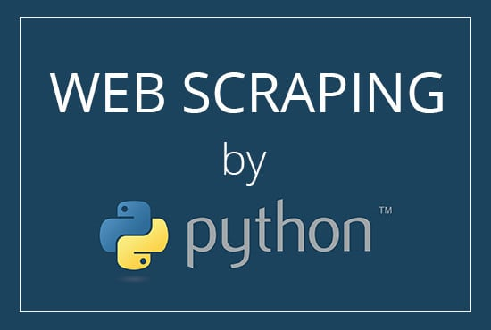

การทำ Web Scraping เพื่อเก็บข้อมูลที่มีอยู่ใน Internet มาทำการวิเคราะห์ เพราะสำหรับการวิเคราะห์ข้อมูล ซึ่งเป็นงานของ Data Scientist แล้ว สิ่งที่สำคัญที่สุดก็คงจะเป็น ข้อมูล นั่นแหละครับ
นอกจากนี้ บริษัทใหญ่ ๆ หลาย ๆ แห่ง ก็ยังใช้ประโยชน์จากการทำ Web Scraping ในการเก็บรวบรวมความคิดเห็นของ social เพื่อเอามาวิเคราะห์ปรับปรุงผลิตภัณฑ์ของตัวเองได้อีกด้วย เช่น เก็บ complains ต่าง ๆ เกี่ยวกับผลิตภัณฑ์ในแต่ละชนิด หรือแม้กระทั่งการทำ sentiment analysis ด้วย technique NLP เพื่อดูว่า ความรู้สึก ของลูกค้าหลังการใช้บริการเป็นอย่างไร จาก comment หรือ post ต่าง ๆ ในโลกออนไลน์แบบ real-time
ในบทความนี้ก็เลยอยากจะเล่า flow ของการดูดข้อมูลแบบง่าย ๆ ซึ่งเหมาะสำหรับท่านที่พอจะเขียน Python ได้บ้างจนถึงชำนาญ และสนใจศึกษาเกี่ยวกับการทำ Web Scraping ครับ โดยในตัวอย่างนี้จะใช้เว็บ Wikipedia ซึ่งสามารถ scrape ได้ง่าย เหมาะกับผู้เริ่มต้นครับ
โดยในบทความนี้จะนำเสนอเพียงแค่ basic เพื่อให้ผู้อ่านได้เห็นภาพรวมกว้าง ๆ ก่อน และจะกลับมาอธิบายลงลึกในแต่ละส่วนแยกกันไปในบทความถัด ๆ ไปอีกทีครับ
Get Started!
ก่อนอื่นจะขอแนะนำเครื่องมือที่ต้องใช้ก่อน จากนั้นก็จะแนะนำ flow ของการ scrape แบบง่าย ๆ พร้อมกับตัวอย่างโค้ดให้นำไปทดลองกันได้ง่าย ๆ ครับ
สึ่งที่ต้องเตรียม…
1. Python แน่นอนว่าถ้าจะเขียน Python script ก็ต้องมีโปรแกรมสำหรับ run script ก่อน ซึ่งตรงนี้สำหรับท่านที่ยังไม่มี Python ในเครื่อง ก็สามารถ install ได้จาก link นี้ โดยแนะนำให้ใช้ version ตั้งแต่ 3.6 ขึ้นไปครับ
แต่ถ้าหากไม่สะดวก install ลงในเครื่องที่ใช้อยู่ก็สามารถ execute Python script online ได้โดยใช้บริการ Google Colab Notebook ของ Google ซึ่งสามารถแก้ไข และ execute Python script ทีละ block ได้ ผ่าน web browser จึงไม่จำเป็นต้อง install หรือ download อะไรลงในเครื่องทั้งสิ้นครับ
โดยโค้ดทั้งหมดที่ใช้ในบทความนี้จะแชร์ผ่าน Google Colab ด้วยเช่นกัน เนื่องจาก Data Scientist ส่วนใหญ่น่าจะคุ้นเคยกับ interface ลักษณะนี้ดี

ภาพ Google Colab Notebook
2. modules สำหรับการ scrape Python modules ที่จำเป็นต้องใช้ในบทความนี้ ได้แก่ requests, และ lxml โดยสามารถ install ผ่านโปรแกรม pip ของ Python ได้จากคำสั่งต่อไปนี้
pip install requests lxml
สำหรับท่านที่ใช้โค้ดบน Google Colab จะมี modules เหล่านี้ installed ไว้อยู่แล้ว ดังนั้นจึงไม่ต้องทำอะไรเพิ่มเติมครับ
เริ่มกันเถอะ!
code สำหรับบทความนี้จะแชร์ไว้ใน Google Colab ตาม link นี้ นะครับ
ถ้าสะดวกสามารถเปิดโค้ดตามและทดลองแก้ไขและรันดูไปพร้อม ๆ กับที่อ่านบทความได้เลยนะครับ
โดยการคลิกแทบ File ด้านบนของ Colab แล้วเลือก Save a copy in Drive... ก็จะสามารถแก้ไขได้ และ save ลง Google Drive ให้อัตโนมัติครับ
ผู้อ่านสามารถรันโค้ดบน Colab ได้โดยการคลิกเลือกแต่ละ block แล้วกด Ctrl+Enter
Python Web Scraping
สมมุติว่า เราต้องการจะดูดข้อมูลจาก https://th.wikipedia.org/wiki/รายชื่อเทศบาลตำบลในประเทศไทย เพื่อเก็บรายชื่อของเทศบาลตำบลทั้งหมดในประเทศไทย ก็อาจจะแบ่งได้เป็น 2 ขั้นตอน คือ Scrape และ Extract

Wikipedia Page ที่จะทำการ scrape
1. Scrape ขั้นตอนแรกก็คือต้องเอาข้อมูลจากหน้าเว็บแบบดิบ ๆ เนี่ย ออกมาให้ได้ก่อน ซึ่งในเว็บอื่น ๆ ทั่ว ๆ ไป ก็จะมีความซับซ้อนหลาย ๆ อย่างที่ทำให้ไม่สามารถดึงออกมาได้ง่าย ๆ ซึ่งจะนำเสนอเทคนิคต่าง ๆ ที่ใช้รับมือแต่ละ cases ในบทความถัด ๆ ไปนะครับ
แต่เนื่องจากในส่วนนี้เราใช้ Web Wikipedia เป็นตัวอย่าง ซึ่งไม่ได้มีการป้องการ scrape หรือกลไกที่ซับซ้อนอะไรมาก เพราะงั้นสามารถส่ง GET request ไปที่ URL โดยตรงตามโค้ดด้านล่างได้เลยครับ
import requests
url = 'https://th.wikipedia.org/wiki/รายชื่อเทศบาลตำบลในประเทศไทย'
resp = requests.get(url)
print(resp)
# Output: <Response [200]>
จากโค้ดด้านบนเราจะได้ object ของ Response มาเก็บไว้ในตัวแปร resp
โดยเราสามารถเรียกดู content ของ response ที่ได้กลับมาได้โดยใช้ resp.content หรือ resp.text แตกต่างกันเล็กน้อย คือ .content จะให้ค่า content ที่เป็น bytes ออกมา ส่วน .text จะ decode ข้อมูล bytes ออกเป็น string ให้ จึงสามารถแสดงตัวอักษรภาษาต่าง ๆ ให้ดูได้ เช่นภาษาไทย
print(resp.text[:5_000])
คำสั่งด้านบนจะเรียกดูข้อมูลจำนวน 5,000 ตัวอักษรแรก (limit ไว้เพื่อไม่ให้มันรกเฉย ๆ)
จะเห็นว่าเราได้โค้ด HTML ของหน้า page นั้น ๆ มาทั้งหมด
นั่นคือตอนนี้เราดึงข้อมูลดิบของหน้าเว็บนั้นมาอยู่ใน Python เรียบร้อยแล้ว
2. Extract ต่อไปเราจะนำข้อมูลดิบที่ได้มา มากรองให้เหลือแค่ข้อมูลที่เราอยากได้เท่านั้น นั่นก็คือชื่อเทศบาลตำบล
โดยทั่วไปในการ extract ข้อมูล วิธีการที่จะใช้นั้นก็ขึ้นอยู่กับหน้าตาของข้อมูล เช่น เป็น HTML, เป็น JSON, หรือเป็น plain text ซึ่ง modules ใน Python ที่จะนำมาใช้กับข้อมูลแต่ละประเภทก็มีหลายอย่าง เช่น lxml, json, beautifulsoup, หรือ re
ในกรณีนี้ เนื่องจากข้อมูลดิบเราเป็น HTML ผู้เขียนจึงใช้ lxml เนื่องจาก lxml มีฟังก์ชันที่ใช้แปลงข้อมูล HTML ให้กลายเป็น tree ซึ่งช่วยให้เราสามารถ extract แต่ละ element ใน HTML ได้ง่าย (เป็นความเห็นส่วนตัวนะครับ บางท่านอาจจะถนัดใช้ beautifulsoup มากกว่า ซึ่งอาจจะเขียนถึงในบทความถัด ๆ ไป)
import lxml.etree
content = resp.content
tree = lxml.etree.fromstring(content, parser=lxml.etree.HTMLParser())
print(tree)
# Output: <Element html at 0x7f34c830e948>
note: เราต้องระบุ parser ให้เป็น HTMLParser เนื่องจากจริง ๆ แล้ว lxml สามารถใช้กับข้อมูลประเภทอื่นนอกจาก HTML ได้ด้วย
พอเราแปลงข้อมูลเป็น tree แล้ว ต่อไปเราก็จะสามารถระบุตำแหน่งของ element ที่เก็บข้อมูลที่เราต้องการได้โดยใช้ XPath
อธิบายแบบคร่าว ๆ XPath ก็คล้าย ๆ กับ path ของ folder ต่าง ๆ ในเครื่องคอมพิวเตอร์ ที่เอาไว้ระบุตำแหน่งไฟล์หรือ folder ที่เราต้องการ โดยเริ่มจาก root (C:/) แล้วก็ไปยัง folder ต่าง ๆ ตามลำดับ เช่น C:/Users/CopyPasteEng/Downloads แต่ XPath ในที่นี้จะใช้ระบุตำแหน่งของ HTML element บนโค้ด code แทน
ตัวอย่าง XPath เช่น //div[@id="mw-content-text"]/div/p/text() อันนี้จะแปลว่า
1. ให้เข้าไปหา element ประเภท div ที่มี id เป็น "mw-content-text"
2. จากนั้นเข้าต่อไปที่ child element ที่เป็นประเภท div
3. แล้วก็เข้าต่อไปที่ element ประเภท p
4. แล้วเอา content ที่เป็น text ทั้งหมดออกมา
note: div[...] คือการใส่เงื่อนไขในการเลือก div นั้น ๆ เข้าไป ในกรณีด้านบน เงื่อนไขก็คือ attribute id ต้องเท่ากับ mw-content-text
ทีนี้คำถามต่อมาก็คือจะเอา XPath ที่บอกตำแหน่งของข้อมูลที่เราต้องการมาได้อย่างไร
คำตอบก็คือต้องดูจาก code ของ page ครับ ไม่มีทางอื่น 555
ซึ่งเครื่องมือหนึ่งที่สามารถช่วยให้แกะโค้ดของ web ต่าง ๆ ได้ง่าย ๆ และฟรี ก็คือ Code Inspector บน Google Chrome ครับ สามารถเปิดขึ้นมาได้โดยคลิกขวาที่หน้าเว็บแล้วเลือก Inspect หรือกด F12
กลับมาที่เว็บตัวอย่างของเราครับ XPath ของชื่อเทศบาลตำบลทั้งหมดที่เราต้องการก็คือ //*[@id="mw-content-text"]/div/table[2 <= position()]/tbody/tr/td[2 <= position() and position() <= 3]//a//text()* เราจึงสามารถที่จะ extract ข้อมูลออกจาก tree ได้ด้วยคำสั่งต่อไปนี้ ก็จะได้ชื่อของเทศบาลตำบลในประเทศไทยจาก Wikipedia มาเก็บเป็น list เอาไว้ได้ตามต้องการครับ
xpath = '//*[@id="mw-content-text"]/div/table[2 <= position()]/tbody/tr/td[2 <= position() and position() <= 3]//a//text()'
tambon_list = tree.xpath(xpath)
print(tambon_list)
# Output: ['เทศบาลตำบลบ้านดู่', 'เทศบาลตำบลเวียงชัย', ...
*ขออนุญาตแก้ XPath ในตัวอย่างนี้เป็นแบบที่ยาวขึ้น เพื่อให้อธิบายได้ง่ายในบทความ part 2 นะครับ
เพื่อให้บทความกระชับ ผู้จัดทำได้ละรายละเอียดบางส่วนเอาไว้
เพราะจริง ๆ แล้ว ทั้งในส่วนของการ scrape และ extract ก็มีรายละเอียดอีกมาก และมีเทคนิคที่อาจจะต้องใช้มากมายซึ่งแตกต่างกันตามแต่ละ website เช่น XPath ที่อยู่ใน code นี่ได้มาได้ยังไง? จะทำอย่างไรกับบาง website ที่มีกลไกที่ป้องกันการ scraping หรือบาง website ที่มี format ขอข้อมูลเป็นลักษณะอื่น
เพื่อให้ผู้อ่านได้รับข้อมูลครบถ้วน ในบทความนี้จึงนำเสนอเพียงแค่ basic ให้ผู้อ่านได้เห็นภาพรวมกว้าง ๆ ก่อน และคิดว่าจะกลับมาอธิบายลงลึกในแต่ละส่วนแยกกันไปอีกทีครับ
Summary
คิดว่าจากบทความนี้ ผู้อ่านน่าจะได้เห็นภาพของการ scrape แบบง่าย ๆ ไปแล้วสำหรับการเริ่มต้น ในบทความถัดไปเราก็จะสามารถไปดูเคสที่ซับซ้อนกันต่อได้ครับ
อย่างที่ได้กล่าวไปข้างต้นครับ ว่าในการวิเคราะห์ข้อมูลเพื่อทำนายเหตุการณ์ต่าง ๆ ให้ถูกต้องและแม่นยำสิ่งที่สำคัญที่สุดคือ ข้อมูล ที่อัพเดตตลอดเวลา
ซึ่งเราอาจจะมอง Internet เป็นเหมือนแหล่งข้อมูลฟรี ที่เราสามารถ scrape มายังไงก็ได้ แต่ควรคำนึงถึงเรื่องของกฎหมายและความเหมาะสมด้วยครับ สิ่งสำคัญก็คือต้องไม่ทำให้ใครเดือดร้อน
และสำหรับท่านที่สนใจอยากทราบรายละเอียดของแต่ละขั้นตอนอย่างละเอียด ก็สามารถติดตามได้ในบทความที่จะลงต่อ ๆ ไปนะครับ
หรือถ้ามีเรื่องไหนที่สนใจเพิ่มเติมสามารถ comment เอาไว้ได้นะครับ
FB Page: Copy Paste Engineer
Part อื่น ๆ ใน series
- Part II - Chrome’s Code Inspector
- Part III - เทคนิคการ extract ข้อมูลด้วย XPath
- Part IV - ทำไมถึง scrape บางเว็บไม่ได้
Reference : https://dev.to/copypasteengineer/